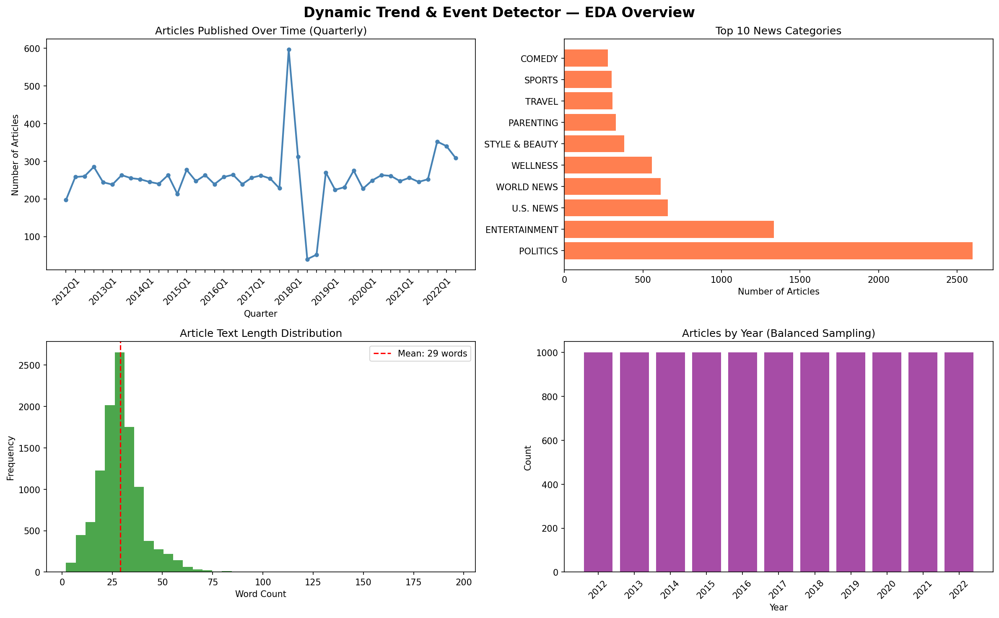
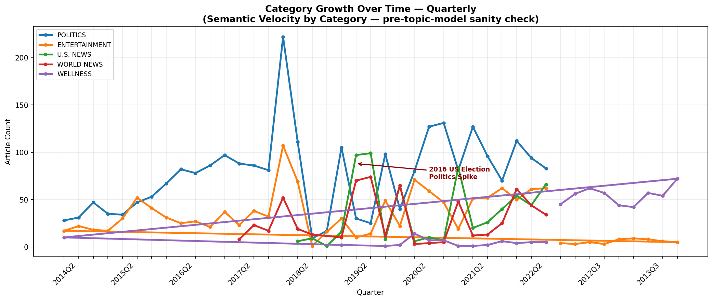
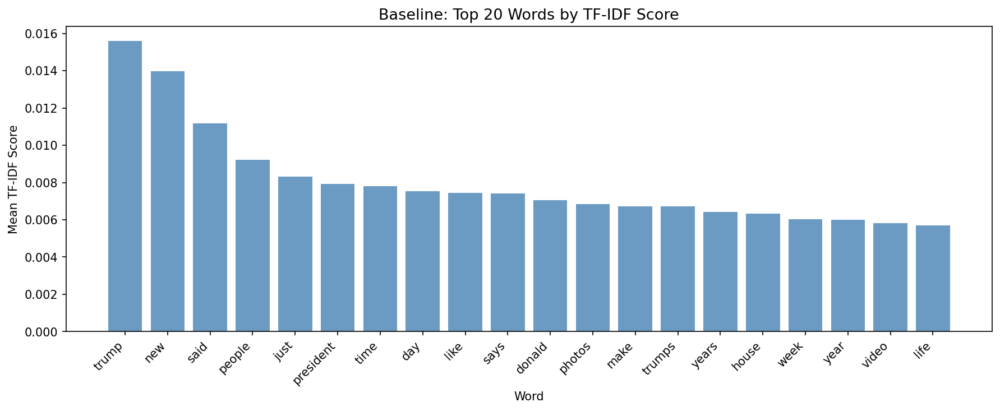
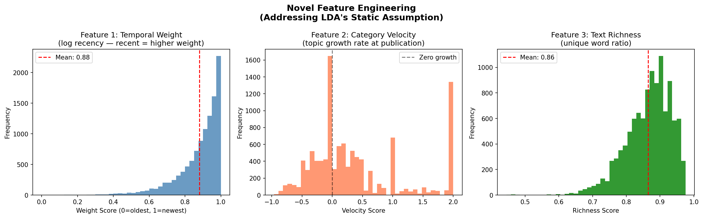
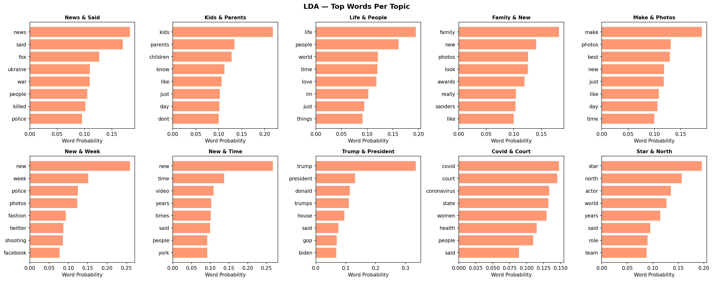
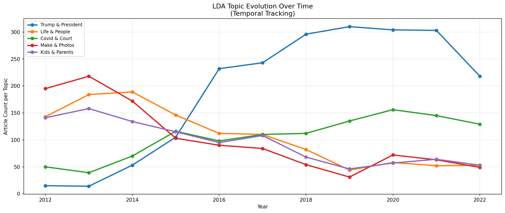
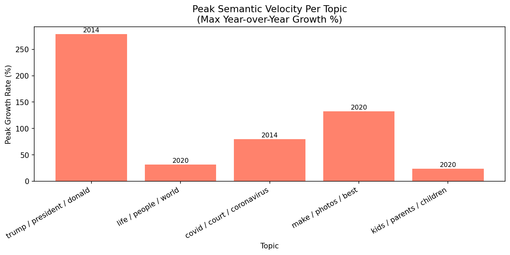

Mehak Jain | Advanced Machine Learning — Phase 1 | March 2026
Our solution: track Semantic Velocity — how fast a topic grows — and verify against real news

HuffPost News Category Dataset (Misra, 2022) — balanced to prevent election-year volume bias

Politics coverage grew 278% during 2016–2017 — the US presidential election cycle is clearly visible as a velocity spike. This proves real-world events warp statistical momentum curves.

"trump" is the #1 word across the entire 2012–2022 corpus — confirms political dominance.
Every document is a MIX of topics. Every topic is a distribution over words.

w(d) = log(1 + Δt) / max(log(1 + Δt))
Recent articles weighted higher. Mean = 0.88
V(c,t) = [N(c,Wt) - N(c,Wt-1)] / N(c,Wt-1)
Growth rate at time of publication
R(d) = |Unique Words| / (|Total Words| + 1)
Semantic density. Mean = 0.86

LDA discovered COVID-19 (covid/court/coronavirus) and Trump & President topics completely unsupervised — no labels, no guidance.

Near zero in 2012 → 278% growth by 2016 — exactly matching the US presidential campaign.
Emerges in 2019 → peaks sharply in 2020 — exactly when global lockdowns began.

Peak growth rate per topic with year annotation. Trump/President shows 278% peak velocity in 2014. This is the mathematical fingerprint of a real-world emerging event.
2014 — ACA Legal Challenges
Top words: state, health, court, people
Context: Affordable Care Act court battles over health mandates.
2020 — COVID-19 Pandemic
Top words: state, health, court, people
Context: COVID pandemic, state health lockdowns, court challenges.
LDA's bag-of-words assumption strips context entirely. Both eras share identical vocabulary → cosine similarity ≈ 1.0 → same topic. Phase 2 fix: SBERT encodes full sentence meaning, separating these two contexts in embedding space.
This failure is a strength — it precisely identifies LDA's limitation and scientifically motivates Phase 2.
SBERT — Sentence embeddings that understand meaning
UMAP — Reduce 384D → 5D for clustering
BERTopic — Neural topic modeling
GDELT — Real-world event verification
This project realizes Blei et al.'s (2003) prediction that LDA would be extended with temporal topic series — 20 years later.